第28章 可重构算术（Reconfigurable Arithmetic）
本章导读
FPGA 的底层资源（LUT、进位链、DSP 块、BRAM）与 ASIC 门电路完全不同——在 FPGA 上”好”的算术结构，往往不是教科书上的 ASIC 最优解。本章讲 FPGA 算术的设计方言：进位链魔法、DSP 块复用、分布式算术、以及粗粒度可重构阵列的演进方向。
28.1 可编程逻辑器件（Programmable Logic Devices）
FPGA 的基本积木：
- LUT（查找表）：\(n\) 输入任意布尔函数——本质是第 24 章”查表算术”的物理化身；
- 专用进位链（carry chain）：每个 LUT 旁硬化的快速进位通路，把行波进位的级延迟压到几十皮秒——FPGA 上行波加法器快得出乎意料；
- DSP 块：硬化的乘加单元（如 27×18 乘法 + 48 位累加器），做乘法绕开 LUT 海洋；
- BRAM：块存储，查表与 FIFO 的主力。
历史上，可编程器件按编程机制分两大家族：熔丝型（所有可能的连接先做好，用大电流选择性熔断）与反熔丝型（按需建立连接）。电路图上的约定两者一致：保留或建立的连接画成交叉线上的实心点，熔断或未建立的则无点。带存储元件的可编程阵列逻辑（PAL）会把每个或门输出存进触发器，输出可从”或门输出、其补、触发器输出”中三选一，并可通过多路器反馈回与阵列。今天最灵活的方式是把配置数据存进 SRAM 单元，配置位既控制开关，也充当查找表的存储内容。
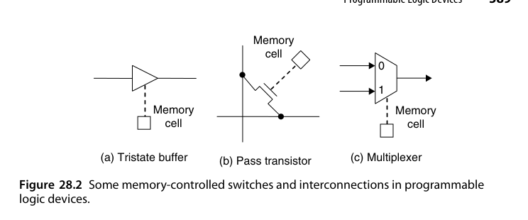
一个 \(n\) 输入 LUT 的硬件本质是 \(2^n\) 个 SRAM 单元加一棵 \(2^n\) 选 1 的多路器树——用它实现一个 4 输入与门、还是实现某个 4 位输入函数查表，成本完全一样。这种”功能免费、资源定额”的特性彻底改写了算术设计的成本函数：优化目标从 ASIC 的”门数最少、逻辑最简”变成 FPGA 的”LUT 级数最少、专用资源用得最尽”。很多在门级设计里被判定为浪费的结构（小位宽查表、预计算），在 LUT 架构下反而是最省的选择。
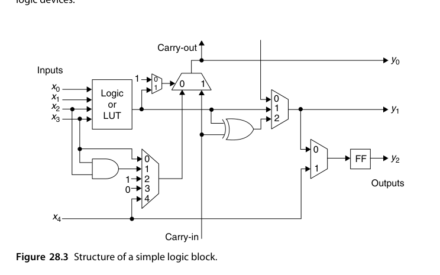
逻辑块内部的结构比”一个 LUT + 一个触发器”要丰富得多（图 28.3 是大幅简化后的版本）：LUT 可以是 \(16 \times 1\) 的表，按 4 位输入模式选出某个 SRAM 单元的内容作为输出；多条输出线既可以组合输出（\(y_0, y_1\)），也可以取寄存器输出（\(y_2\)）——前者用于组合链式搭建多级逻辑，后者用于构成流水级。逻辑块还能成簇（cluster）：一个簇含两个或四个 LBs 时，一个 2 位或 4 位加法器就能落在单个簇内，再由若干簇串接成更宽的加法器，从而缩短互连、提高速度。
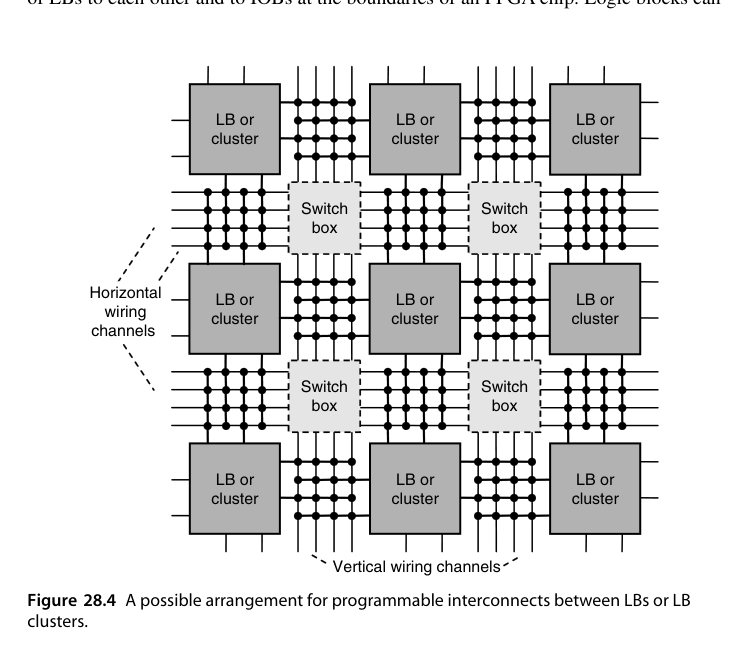
芯片层的样貌可以想象成图 28.4：中心是大量逻辑块，四周是 I/O 块，块与块之间填充满可编程互连与开关盒（switch box）。逻辑块从水平或垂直布线通道取输入、也把输出接到这些通道上；每个实心连接点各由一个 SRAM 位控制，再加上若干控制开关盒的配置位，就能把任意一个逻辑块的输出送到另一个逻辑块或某个 I/O 块的输入端。需要注意的是，图 28.4 并没有画出专用进位线——它们独立于通用互连，直接在相邻的逻辑块（或簇）之间首尾相接。
配置的灵活是有代价的：一部分代价是逻辑电路冗余（存放配置比特的存储单元以及大量用不上的器件），另一部分是相比精心优化的 ASIC 实现显著降低的速度。但讽刺的是，FPGA 同时适合低成本与高性能两类设计——大批量摊薄了成本，也让厂商有动力把器件的算术特性打磨到极致。
这种”逻辑块海洋 + 布线通道 + 周边 I/O”的布局有个专门名字：岛式架构（island-style architecture）——逻辑块是岛屿，互连是环绕其间的海。评估一个算术结构在 FPGA 上的好坏，经验顺序是：先看它用掉多少逻辑块（LUT/触发器），再看它需要多少通用布线（布线往往比逻辑更快耗尽），最后才看关键路径级数。这与 ASIC”先看门数、再看级数”的顺序明显不同。
这类配置存储器在上电时从 ROM 装入以确定系统功能，也可以在运行期间重新装载以实现运行时重配置。重配置还分全局与部分（partial）两种：部分重配置只改写芯片某个区域的配置比特、其余区域照常运行，于是同一片 FPGA 可以按时间片”换装”不同加速器——上午是视频编解码、下午是神经网络推理。配置比特流的规模（现代器件几十到几百 Mbit）与改写端口的速度，决定了这种”时分复用硅片”能达到的粒度下限。
落到工程实践，完整的 FPGA 设计流程是八个阶段：规格描述（写 RTL） → 综合 → 划分 → 布局 → 布线 → 生成配置比特流 → 下载编程 → 功能与时序验证。现实中第 2-6 步基本交给厂商工具完成，于是器件该怎么选、加法器乘法器该怎么搭这类决策都由工具代劳——这也是为什么 28.2-28.5 节的内容主要面向需要自己动手做物理映射、或者干脆在造工具的高级用户。
ASIC 思维：行波 = 慢，CLA/前缀 = 快。FPGA 思维：行波走硬化进位链，又快又省 LUT；花哨的前缀结构占用大量 LUT 和通用布线，反而常常更慢更贵。在 FPGA 上，“简单结构 + 硬化资源”通常击败”教科书最优结构”。
28.2 FPGA 加法器设计（Adder Designs for FPGAs）
- 默认选择就是
+：综合器自动映射到进位链，64 位加法器轻松跑到数百 MHz； - 进位选择/跳过仍有价值：当位宽极大（数百位，密码学）或进位链被布线打断时；
- 三输入加法器：现代 FPGA 的 LUT 可配置为”3 输入 2 输出”模式，一个 LUT 同时产出 sum 与 carry——ternary add（\(a + b + c\)）只需一级 LUT + 一级进位链，是压缩树的硬化等价物；
- 增量器/计数器：进位链上几乎免费。
若逻辑块真的退化成图 28.3 那种通用形态、没有专用进位逻辑，一个全加器就要占用两个 8 项 LUT（一个算和、一个算进位），整条进位链还得走通用互连。所以图 28.3 里那对”进位输入 / 进位输出”并不是点缀——正因为加法是最常见的算术运算，厂商才把进位元胞硬埋进逻辑块里，既省下通用逻辑资源，又让进位链跑得飞快。结论：凡是厂商提供的进位链，永远优先使用。有些 FPGA 甚至在用户不可见的地方内置了超前进位电路，这种情况下无疑应当直接调用。把这样的进位链加法器改造成 2 的补码加/减器也很直接，只需在图 2.7 的基础上给操作数加一级异或门。
延迟的数量级值得记一下：走通用布线时，一级进位（LUT 查表 + 互连）以纳秒计，64 位行波加法器会被拖到几十纳秒；硬化进位链把每位的进位多路器固化在 LUT 旁边，每级进位延迟降到几十皮秒，64 位行波的进位链总延迟可以压进数纳秒——这就是”FPGA 上行波反而快”的物理根源。
还有一张底牌别忘了：FPGA 的触发器几乎免费（每个 LUT 旁边都配一个，不用也是浪费）。因此流水化在 FPGA 上格外便宜——加法器、乘法器随手切成两三拍流水，频率立刻上一个台阶，而寄存器成本为零。很多”ASIC 上不值当的深流水”在 FPGA 上是默认做法。
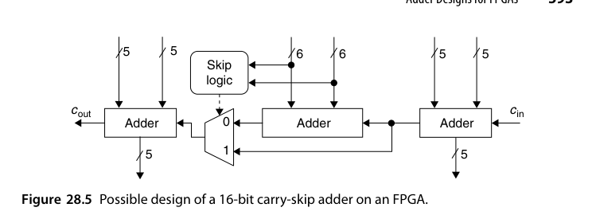
那么”快速加法器”在 FPGA 上还有戏吗？有，但只在宽加法器上。一个来自 2001 年 FPGA 设计竞赛的实例（V. Kantabutra 提交）：16 位进位跳过加法器采用 5 + 6 + 5 的分块，在某 Atmel FPGA 上比行波加法器快 23%，代价是 37% 的逻辑块；32 位版本用 10 + 12 + 10 的分块效果更好。这类”crossover 宽度”（越过它才值得用快速加法器）高度依赖器件与应用，没有通用答案，但可以肯定的是：在 FPGA 上做对数延迟加法器几乎总是不划算——超前进位所消耗的 LUT 与互连，加上为保持结构规则而浪费的逻辑块，代价远超收益。
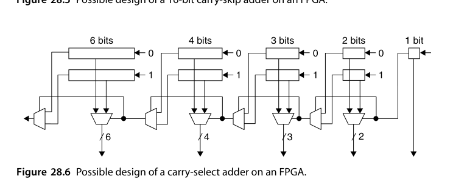
进位选择加法器是另一种常见选择。图 28.6 给出一种混合结构：最右一个 1 位加法器，左侧依次挂上越来越宽的进位选择级（2、3、4、6 位），每一级内部是两份同样宽度的行波加法器（进位输入分别固定为 0 和 1），真正的进位自右向左穿过底部的一串多路器后，才把正确的和与进位选出来。文献报告该设计把延迟减半（时钟频率翻倍），代价是逻辑块数增至 3.5 倍。
进位保存加法器（本质是若干孤位的全加器）在 FPGA 上很好搭；但多于三个输入的多操作数加法要小心——各级进位保存加法器之间的互连可能吃掉全部收益。而这类多操作数加法恰恰是 28.3 节快速乘法器与 28.4 节查表函数求值的基础。现有 FPGA 在支持规约树（并行压缩器）方面普遍低效，因此一直有人建议把并行压缩器直接硬化进 FPGA：初步研究的结论是速度收益温和、面积节省显著。
宽加法器的典型用户是密码学：RSA/ECC 的模运算动辄 256-4096 位，进位链再快，几百级行波也要若干纳秒，此时进位跳过/选择的分块结构开始显出价值——正落在图 28.5、28.6 那类设计的主场。反过来，普通 32/64 位数据通路上写 a + b 让工具走进位链几乎总是最优。判断依据很朴素：进位链延迟与位宽成正比，快速结构省的是比例、花的是常数，位宽越大比例越值钱。
28.3 乘法器与除法器设计（Multiplier and Divider Designs）
乘法三档策略：
- 小乘法（≤ 12×12）：LUT 实现（压缩树映射）即可；
- 中乘法：DSP 块直接吃；
- 大乘法：DSP 块 tiling + LUT 补缝，或分治拼接（12.1 节思想）。
除法：FPGA 上除法器永远是奢侈品——SRT 迭代占用大量 LUT，优先规避：能乘倒数就乘倒数（13.5 节魔数），能查表就查表（24 章），必须用除法时再例化 IP 核并接受它的延迟。
逐位顺序乘法器在 FPGA 上最容易实现（就是一串加法），配合改进型 radix-4 Booth 重编码可把周期数减半；也可以像图 10.2 那样预计算 \(3a\) 来做 radix-4 乘法。周期账很直观：\(32 \times 32\) 无符号乘法逐位方案需 32 拍，radix-4 Booth 后每拍消化 2 位、16 拍完成（符号修正再加一拍），radix-8 则约 11 拍；而硬核 DSP 块单拍或数拍流水完成同一运算——顺序方案省 LUT、硬核方案省时间，取舍完全取决于系统中乘法出现的频率。在并行乘法结构中，阵列乘法器最贴合 FPGA 的规则网格；若整块资源太多，可以先实现一半或四分之一（如 \(8 \times 16\) 或 \(4 \times 16\)），然后分两次或四次复用。反过来，当一次计算里有多次乘法时，把单个阵列乘法器流水化往往比复制多个更划算。
Wallace/Dadda 树在 FPGA 上通常不划算：既吃掉海量逻辑块，又产生又长又浪费的互连。更好的选择是由行波进位加法器构成的加法树（图 8.4、8.5）——结构紧凑，速度也不落下风。若允许精度损失，截断乘法器（11.4 节）可进一步压低资源。
小乘法可以用第 12.1/12.2 节的分治策略：用 LUT 实现 \(2 \times 2\) 乘法，再由四个这样的块加一个 4 位加法器和一个 6 位加法器拼成 \(4 \times 4\) 乘法器（图 28.7）；四份图 28.7 的电路再加一个 8 位、一个 12 位加法器即得 \(8 \times 8\)。
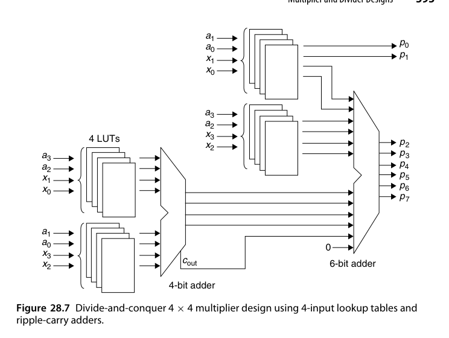
这种分治的规模账很直观：\(2 \times 2\) 乘法的每个输出位都是 4 输入函数，恰好一个 LUT 一位；\(4 \times 4\) 需要 \(4 \times 4 = 16\) 个 LUT 做部分积、再加两级行波加法器归并。继续递归到 \(8 \times 8\)，加法器的级数与位宽同步增长——这与第 12.1 节的分治乘法器完全同构，只是把”b × b 乘法模块”换成了”LUT 能一口吃下的小块”。
除法器的资源账同样值得算：32 位 radix-2 顺序除法器约需 32 拍、数百 LUT；radix-4 SRT 把拍数减半但商位选择表显著变宽；完全展开的 32 位阵列除法器则要消耗数千 LUT——大约相当于把整个中档器件的一个象限交给一个很少被调用的运算。这就是”FPGA 上除法能免则免”的量化注脚。
常数乘法有两条路线。其一是查表：例如用 8 位输入 \(x\) 乘以常数 \(a = 13\)（结果 12 位），可用 8 个四输入 LUT 存放全部可能的 \(13x_H\)（\(x_H\) 为 \(x\) 的高 4 位），另外 8 个 LUT（或复用同一组表再跑一拍）给出 \(13x_L\)，最后把 \(13x_H\) 左移 4 位与 \(13x_L\) 相加。一般地，若 LUT 有 \(h\) 个输入，\(k\) 位数 \(x\) 乘 \(m\) 位常数需要 \(k(m/h + 1)\) 个 LUT 和 \(k/h - 1\) 个多位加法器；这些加法器还可以排成树（见 28.2 节末尾）。
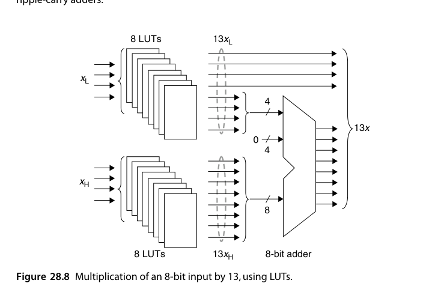
其二是用二进制有符号数字（BSD）表示里非零数字很少的常数，直接搭加法树。例如
\[ 115 = (1\,0\,0\,\bar{1}\,0\,0\,1\,1)_{two} = 128 + 16 - 2 + 1 \]
于是乘 115 只需把 \(x\)、\(2x\)、\(-16x\)、\(128x\) 相加——三个多位加法器（串成链或排成两级树）。DSP 文献里把这类实现称为 multiplierless（无乘法器）：滤波器的系数常常可以微调而不影响系统功能，于是设计者会有意选那些 BSD 权重（非零数字个数）很低的系数。
把查表公式代回验证：\(k = 8\)、常数 13（\(m = 4\) 位）、\(h = 4\)，得 \(k(m/h + 1) = 16\) 个 LUT、\(k/h - 1 = 1\) 个加法器，与图 28.8 的两组 8 LUT 加一个 12 位加法器一致。常数位宽越大，查表方案成本线性增长；BSD 加法树方案的成本只与非零数字个数有关——常数”稀疏”与否，是两条路线的分水岭。
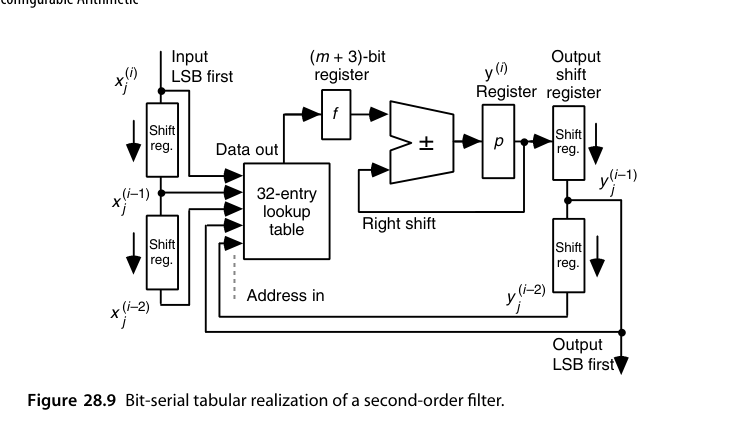
现代 FPGA 普遍集成了硬核乘法器（几十到几百个 \(18 \times 18\) 或更宽），设计取舍与”用 LUT 拼一切”的思路不同：凡是专用硬核能吃的运算就用硬核，它会同时带来面积、速度与功耗三方面收益。超过硬核宽度的乘法可用分治拼接：四个 \(18 \times 18\) 可以合成 \(32 \times 32\) 或 \(36 \times 36\)。
除法因为没有乘法那么高频，厂商通常不提供硬核除法器；好在硬核乘法器上了船之后，用迭代乘法求商或先求倒数再乘（16.2、16.3 节）就变得格外有吸引力。顺序二进制除法器本身的结构与顺序乘法器高度相似，只多一小块商位选择逻辑，甚至可以做成乘法/除法合一单元（15.6 节）。高位除法虽然可行，但通常不划算；更实用的做法是把迭代递推部分展开成组合逻辑，一次算出多位商——极端情况下完全展开，一个（很宽的）时钟周期出全部商位。
28.4 查表与分布式算术（Tabular and Distributed Arithmetic）
分布式算术（DA）是 FPGA 的独门绝技。以 FIR 滤波为例，固定系数乘加 \(\sum c_i x_i\)：把 \(x_i\) 按比特平面展开，同一位权重的部分积之和 \(\sum c_i x_{i,j}\) 只有 \(2^n\) 种组合——预存 LUT！每个比特平面查一次表、移位累加，\(k\) 拍完成整个点积，完全不用乘法器。
- LUT 即表：\(n\) 个抽头 → \(2^n\) 项表，映射为 LUT 网络；
- 串行 DA 面积极小，并行化（多比特平面同时查）可线性提速；
- 系数可变的场合用可更新 DA 或退回 DSP 块。
把这个想法写成一个具体例子：二阶滤波器
\[ y(i) = a(0)x(i) + a(1)x(i-1) + a(2)x(i-2) - b(1)y(i-1) - b(2)y(i-2) \]
把 2 的补码操作数 \(x = (x_0.x_{-1}\cdots x_{-l})_{two}\) 按位权展开，注意符号位的权是负的：一般地定义
\[ f(s,t,u,v,w) = a(0)s + a(1)t + a(2)u - b(1)v - b(2)w \]
其中 \(s,t,u,v,w\) 都是单比特变量。系数若是 \(m\) 位常数，则 \(f\) 的每个取值是五个 \(m\) 位数之和，用 \(m + 3\) 位足够表示，共 \(2^5 = 32\) 项 ——一张 32 项的表就装下了整个二阶滤波器。于是
\[ y(i) = \sum_{j=-l}^{-1} 2^{j}\, f\bigl(x^{(i)}_j,\, x^{(i-1)}_j,\, x^{(i-2)}_j,\, y^{(i-1)}_j,\, y^{(i-2)}_j\bigr) \;-\; f\bigl(x^{(i)}_0,\, x^{(i-1)}_0,\, x^{(i-2)}_0,\, y^{(i-1)}_0,\, y^{(i-2)}_0\bigr) \]
最后那一项（带负号）处理的正是符号位的负权。
表项的内容在配置时一次算好。例如取 \(a(0)=0.5\)、\(a(1)=-0.25\)、\(a(2)=0.125\)、\(b(1)=0.75\)、\(b(2)=-0.125\)，则地址 \((s,t,u,v,w) = (1,0,1,1,0)\) 对应的表项是 \(0.5 + 0.125 - 0.75 = -0.125\)；地址全 0 对应 0，地址 \((1,1,1,0,0)\) 对应 \(0.5 - 0.25 + 0.125 = 0.375\)。运行时硬件完全不知道”系数”为何物——它只是在查一张已经把五个系数的所有位组合预先加好的表。
硬件上（图 28.9）只需要：五个移位寄存器（输入侧三个：当前输入、前两拍输入各一个；输出侧两个移存器提供前两拍输出），一张 32 项查表，一个 \((m+3)\) 位的累加寄存器 \(p\) 带右移，以及一个输出移位寄存器。工作方式是低位先进：\(y(i)\) 在 \(p\) 里逐拍累加，\(y(i-1)\) 同时从输出移位寄存器逐位吐出；一轮结束时 \(p\) 的内容装入输出寄存器、\(p\) 清零，下一轮开始。\(l+1\) 拍完成一次输出采样。
这种结构的适用面远超滤波器：例如要算 \((x + y + z) \bmod m\)，可以把 \(2^i\)、\(2\cdot 2^i\)、\(3\cdot 2^i\) 在不同 \(i\) 下的模 \(m\) 剩余存进表，用 \(x_i, y_i, z_i\) 与索引 \(i\) 拼出地址读出 \(2^i(x_i + y_i + z_i) \bmod m\)，再累加到模 \(m\) 的运行总和上。
把这张结构在时间上展开——每个比特位置配一套独立的表与加法器，所有比特平面并行处理——就是分布式算术（distributed arithmetic）。它的本质是”把多操作数中同权重的位归到一组一起处理”，而 LUT 阵列天生适合承载这种”按位分组的小函数之和”，因此在 FPGA 上效率极高。
DA 的软肋是表容量随系数个数指数增长：\(n\) 个系数一张 \(2^n\) 项表，\(n = 16\) 就要 64K 项。标准对策是分组：把 16 个系数分成 4 组各查 \(2^4 = 16\) 项的表，再用加法树归并 4 个部分和——总表容量从 64K 项降到 64 项，代价是三四个加法器。这与常数乘查表的分块思想完全一致：LUT 小，就用加法器把多张小表缝成大函数。
DA 是”查表算术”（24 章）与”位串行”（5.1、12.3 节）的完美合体，也是 LUT 架构 FPGA 最自洽的算术范式——结构顺着硬件长，而不是让硬件迁就结构。
28.5 FPGA 上的函数求值（Function Evaluation on FPGAs）
- CORDIC 的全流水展开（22.3 节）在 FPGA 上如鱼得水：固定移位硬连线、无乘法器、纯 LUT+进位链；
- 表 + 插值（24.4）：BRAM 存系数，DSP 块做乘加——\(\sin/\log/\exp\) 的标准 FPGA 配方；
- 多项式 Horner 链（23.5）：DSP 块级联，每拍一个 FMA。
CORDIC 在 FPGA 上几乎是为硬件量身定做的：只需要加法/减法、移位和很小的表。图 22.3 的三加法器 CORDIC 处理器可以直接映射；想要更省面积可以改用位串行加法或分时复用单个加法器；想要更高速度则可以把迭代在时间上展开。
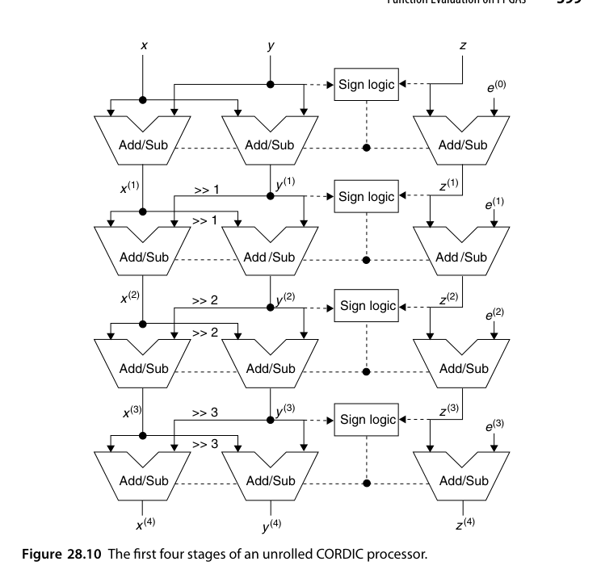
完全展开带来两处漂亮的简化（图 28.10）：每一级专用的处理器移位量是固定的（可以直接在布线上”硬连线”，并不需要真正的移位器），角度 \(e^{(i)}\) 是常量（作为该级的一个固定输入），于是三个加法器中必有一个退化成”加常量的加法器”，可以进一步简化。整个结构天然适合深流水，吞吐可以做到每拍一组结果；部分展开则能在”一次迭代一次迭代”之间自由取点。
规模上，16 位精度的 CORDIC 全展开约需 16 级三操作数加/减单元（每级两个普通加法器加一个加常数加法器），纯 LUT + 进位链实现，深流水后每拍出一份结果；若改为迭代式单单元复用，则 16 拍一份结果、面积降到十几分之一。两端之间的部分展开（如 4 级一组、复用 4 次）给出连续的面积-吞吐刻度，与 25.4 节数字串行的思想一脉相承。
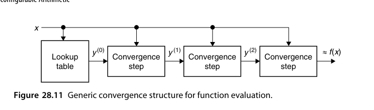
第 23 章的各种加法式/乘法式收敛方法也都能搬上 FPGA。把它们展开成图 28.11 那样的级联结构后有一个重要技巧：让每一级不是把精度翻倍，而是固定增加若干位。这样一来各级收敛步块可以做成完全相同的单元——对 FPGA 这种由同类 tile 拼起来的器件是决定性的优势。具体例子：倒数函数，查表给 7 位精度，其后每个收敛步增加 3 位，三级之后得到 16 位精度。
每一级收敛步的内部并不神秘：以 Newton-Raphson 求倒数为例，一级就是 \(x^{(i+1)} = x^{(i)}(2 - d\, x^{(i)})\)，两个小位宽乘法加一个取补——位宽从 7 位起步逐级加 3，意味着前几级的乘法器很小，DSP 块可以留给最后宽位宽的一级，或者干脆全部用 LUT 实现。这种”逐级变宽”的安排与精度分析是同步设计的：每级只需比上一级多保证 3 个正确位。
另一条路线是插值存储器（图 24.6）。取自变量最高的 \(h\) 位做区间划分等价于把值域分成 \(2^{h}\) 个等宽区间；若改为非均匀分段，可以在保持精度的同时大幅压缩表容量，代价是在表/加法器/乘法器之前插入一个”段译码”块。有人发现用若干张规模适中的表级联来实现这个地址变换相当高效。
表该放在 LUT 还是 BRAM 里，有一条清晰的分界线：一张 18 Kb 的 BRAM 可存 2048 项 9 位表或 1024 项 18 位表，项数多、位宽窄的大表用 BRAM（LUT 放同样内容要贵几十倍）；项数少、组合路径短的小表用 LUT（BRAM 的访问延迟与时钟端口限制反而不划算）。多数函数求值单元因此是混合体：BRAM 存插值系数、LUT 做段译码与归并、DSP 块完成乘加。
用多项式逼近时，逼近理论直接变成资源规划：泰勒展开收敛慢、切比雪夫逼近用更少项数达到同样精度，而 FPGA 上每一项大致对应一级 DSP 块——“少一项”就是”少一级 DSP、少一拍延迟”。因此对目标函数先做一次 offline 的最优一致逼近，再把系数烧进 BRAM，是 \(\sin\)、\(\log\)、\(\exp\) 这类函数在 FPGA 上的标准工作流。
浮点算术过去被认为不适合 FPGA——对齐与规格化移位需要桶式移位器，而桶式移位器要吃掉大量逻辑块和互连资源。随着逻辑块数量暴增以及 28.6 节要讲的专用算术加速器出现，如今在 FPGA 上实现单精度乃至双精度浮点已经是常规操作，性能可与高端处理器竞争。切换成浮点操作数后，上面讲的收敛法与分段表法在结构上无需改动，只是把定点单元换成浮点单元。
28.6 细粒度之外（Beyond Fine-Grained Devices）
FPGA（细粒度，比特级可重构）的通用性代价：配置比特多、布线开关耗电、同功能比 ASIC 慢 3-10 倍、功耗高 10 倍以上。粗粒度可重构阵列（CGRA）：PE 是字宽的 ALU/乘法器，互连可配置——重构开销小几个数量级，能效逼近 ASIC，灵活性远超之。AI 时代的可重构数据流架构（以及 FPGA 内嵌的 AI 引擎阵列）都是这条演化线上的物种。
细粒度带来的失配有其历史根源——FPGA 最初是为了替代随机逻辑（“胶合逻辑”）而生的；也有经济原因——厂商必须面向足够广的应用才能获得规模效益。但即便如此，相对微处理器实现，性能提升 100 倍甚至 1000 倍、能耗节省 50% 以上并不罕见。可重构算术的四大收益来源是：并行处理与流水化、按精度裁剪字宽、让数据流匹配计算结构、缓解存储瓶颈。与之对照，定制 VLSI 是”最后的手段”：人力密集、成本高、周期长；FPGA 的优势在灵活性与适应性，劣势在速度与功耗。
CGRA 把配置粒度从比特抬到字：一个 PE 就是一台 16/32 位 ALU 或乘加器，配置字只有几百到几千比特，重配置在纳秒到微秒级完成（FPGA 的全片重配置是毫秒级）。学术原型如 ADRES、以及商用 AI 数据流芯片里的大量变体，都在验证同一条路线：当负载的并行模式以字宽运算为单位时，比特级可重构就是过度通用。反过来说，CGRA 的软肋同样清楚——位级操控密集的应用（加密、CRC、编解码）在它上面效率骤降，粗细结合（FPGA 织物里嵌 CGRA，或反之）是目前看到的务实答案。
一条明显的演化线是往 FPGA 里塞更粗粒度 building blocks：前面提过的进位链、乘法器、并行计数器能减少实现同一计算所需的逻辑块与互连，从而间接降低功耗；再往前一步就是把信号处理器核或通用处理器核搬上 FPGA。这个想法在两个方向上都被实践过：一是片内集成若干处理器核（从”旁挂一个 CPU”到”若干个核散列在逻辑块之间”），二是直接在传统处理器里塞 FPGA 作为协处理器（例如 Cray XD1 超级计算机的每个处理节点都配了一片 Xilinx Virtex-4 作为加速器）。
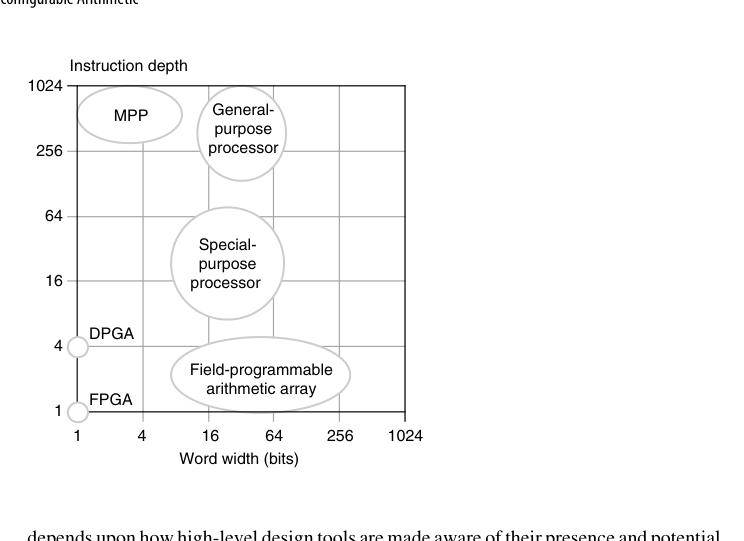
但硬化是有代价的抉择：如果目标应用中这些单元用不上（或工具链不会用），它们占的芯片面积就纯粹是浪费；更糟的是，为了绕开它们去连接其他资源，布线延迟可能反而变差。反之，一旦用上，它们能把可重构实现与定制 VLSI 之间的性能差距显著缩小。
判断一个硬核（乘法器、浮点单元、DSP slice、处理器核）该不该放进 FPGA，标准只有一条：它在典型设计中被用到的概率有多大。这条标准的另一面是——工具链能不能自动识别负载并映射到它上面。今天的 AI 引擎阵列、HBM 控制器、片上网络都是从这条准则长出来的；而历史上被淘汰的硬核，几乎都不是死于技术问题，而是死于没人用。
本章小结
- FPGA 算术第一定律：顺着硬化资源（进位链、DSP、BRAM）设计。
- 加法器默认
+；宽加法器可用进位跳过（+23% 速度 / +37% 逻辑块）或进位选择（延迟减半 / 3.5 倍资源）；对数级加法器基本不划算。 - 乘法按位宽选 LUT/DSP/tiling；常数乘用查表（\(k(m/h+1)\) 个 LUT）或低权重 BSD 加法树；除法能免则免，宜用乘倒数/迭代。
- 分布式算术：比特平面查表，无乘法器 FIR，FPGA 独门绝技；展开后即并行 DA。
- CORDIC 全展开时可硬连线移位、常量角度；收敛法宜”每步固定增若干位”以便复用同一 tile。
- CGRA 是细粒度与 ASIC 之间的进化方向；硬化的成败取决于”会不会被用上”。